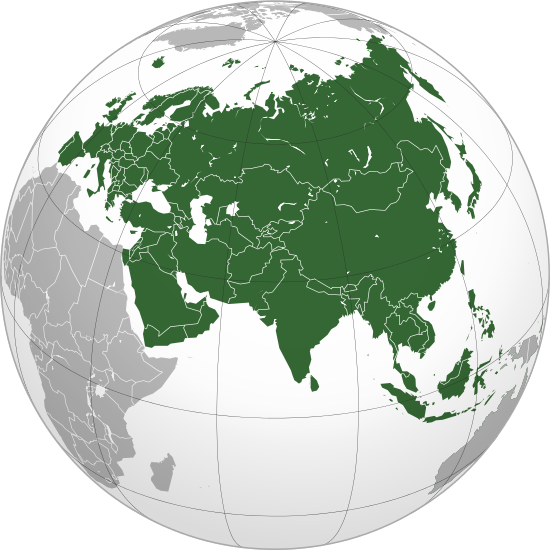

Choose the continent you are interested in

Eurasia is the combined continental landmass of Europe and Asia. The term is a portmanteau of its two constituents. Located primarily in the Northern and Eastern Hemispheres, it is bordered by the Atlantic Ocean on the west, the Pacific Ocean to the east, the Arctic Ocean on the north, and by Africa, the Mediterranean Sea, the Pacific Ocean and the Indian Ocean to the south. The division between Europe and Asia as two different continents is a historical and cultural construct, with no clear physical separation between them; thus, in some parts of the world, Eurasia is recognized as the largest of five or six continents. Eurasia covers around 55,000,000 square kilometres (21,000,000 sq mi), or around 36.2% of the Earth's total land area. The landmass contains around 5.0 billion people, equating to approximately 70% of the human population. Humans first settled in Eurasia between 60,000 and 125,000 years ago. Some island countries, including the United Kingdom, Ireland, Japan, and Indonesia, are included under the popular definition of Eurasia, in spite of being separate from the massive landmass.
Eurasia
Eurasia is the combined continental landmass of Europe and Asia. The term is a portmanteau of its two constituents. Located primarily in the Northern and Eastern Hemispheres, it is bordered by the Atlantic Ocean on the west, the Pacific Ocean to the east, the Arctic Ocean on the north, and by Africa, the Mediterranean Sea, the Pacific Ocean and the Indian Ocean to the south. The division between Europe and Asia as two different continents is a historical and cultural construct, with no clear physical separation between them; thus, in some parts of the world, Eurasia is recognized as the largest of five or six continents. Eurasia covers around 55,000,000 square kilometres (21,000,000 sq mi), or around 36.2% of the Earth's total land area. The landmass contains around 5.0 billion people, equating to approximately 70% of the human population. Humans first settled in Eurasia between 60,000 and 125,000 years ago. Some island countries, including the United Kingdom, Ireland, Japan, and Indonesia, are included under the popular definition of Eurasia, in spite of being separate from the massive landmass.

Africa
Africa is the world's second-largest and second-most-populous continent. At about 30.2 million km2 (11.7 million sq mi) including adjacent islands, it covers six percent of Earth's total surface area and 20.4 percent of its total land area. With 1.1 billion people as of 2013, it accounts for about 15% of the world's human population. The continent is surrounded by the Mediterranean Sea to the north, both the Suez Canal and the Red Sea along the Sinai Peninsula to the northeast, the Indian Ocean to the southeast, and the Atlantic Ocean to the west. The continent includes Madagascar and various archipelagos. It has 54 fully recognized sovereign states (or countries), nine territories and two de facto independent states with limited or no recognition. Africa's population is the youngest amongst all the continents; the median age in 2012 was 19.7, when the worldwide median age was 30.4. Algeria is Africa's largest country by area, and Nigeria by population. Africa, particularly central Eastern Africa, is widely accepted as the place of origin of humans and the Hominidae clade (great apes), as evidenced by the discovery of the earliest hominids and their ancestors, as well as later ones that have been dated to around seven million years ago, including Sahelanthropus tchadensis, Australopithecus africanus, A. afarensis, Homo erectus, H. habilis and H. ergaster – with the earliest Homo sapiens (modern human) found in Ethiopia being dated to circa 200,000 years ago. Africa straddles the equator and encompasses numerous climate areas; it is the only continent to stretch from the northern temperate to southern temperate zones.

North America
North America is a continent entirely within the Northern Hemisphere and almost all within the Western Hemisphere. It can also be considered a northern subcontinent of the Americas. It is bordered to the north by the Arctic Ocean, to the east by the Atlantic Ocean, to the west and south by the Pacific Ocean, and to the southeast by South America and the Caribbean Sea. North America covers an area of about 24,709,000 square kilometers (9,540,000 square miles), about 16.5% of the earth's land area and about 4.8% of its total surface. North America is the third largest continent by area, following Asia and Africa, and the fourth by population after Asia, Africa, and Europe. In 2013, its population was estimated at nearly 565 million people in 23 independent states, or about 7.5% of the world's population, if nearby islands (most notably the Caribbean) are included.

South America
South America is a continent located in the Western Hemisphere, mostly in the Southern Hemisphere, with a relatively small portion in the Northern Hemisphere. It is also considered as a subcontinent of the Americas, which is the model used in Spanish-speaking nations and most of South America. It is bordered on the west by the Pacific Ocean and on the north and east by the Atlantic Ocean; North America and the Caribbean Sea lie to the northwest. It includes twelve sovereign states – Argentina, Bolivia, Brazil, Chile, Colombia, Ecuador, Guyana, Paraguay, Peru, Suriname, Uruguay, and Venezuela – and two non-sovereign areas – French Guiana, an overseas department of France, and the Falkland Islands, a British Overseas Territory (though disputed by Argentina). In addition to this, the ABC islands of the Netherlands and Trinidad and Tobago may also be considered part of South America. South America has an area of 17,840,000 square kilometers (6,890,000 sq mi). Its population as of 2005 has been estimated at more than 371,090,000. South America ranks fourth in area (after Asia, Africa, and North America) and fifth in population (after Asia, Africa, Europe, and North America). The most populous countries are Brazil, Colombia, Argentina, Venezuela and Peru.

Australia
Australia officially known as the Commonwealth of Australia, is an Oceanian country comprising the mainland of the Australian continent, the island of Tasmania, and numerous smaller islands. It is the world's sixth-largest country by total area. Neighbouring countries include Papua New Guinea, Indonesia and East Timor to the north; the Solomon Islands and Vanuatu to the north-east; and New Zealand to the south-east. For about 50,000 years before the first British settlement in the late 18th century, Australia was inhabited by indigenous Australians, who spoke languages grouped into roughly 250 language groups. After the European discovery of the continent by Dutch explorers in 1606, Australia's eastern half was claimed by Great Britain in 1770 and initially settled through penal transportation to the colony of New South Wales from 26 January 1788. The population grew steadily in subsequent decades; the continent was explored and an additional five self-governing crown colonies were established. On 1 January 1901, the six colonies federated, forming the Commonwealth of Australia. Since federation, Australia has maintained a stable liberal democratic political system that functions as a federal parliamentary democracy and constitutional monarchy comprising six states and several territories. The population of 24 million is highly urbanised and heavily concentrated in the eastern states and on the coast.